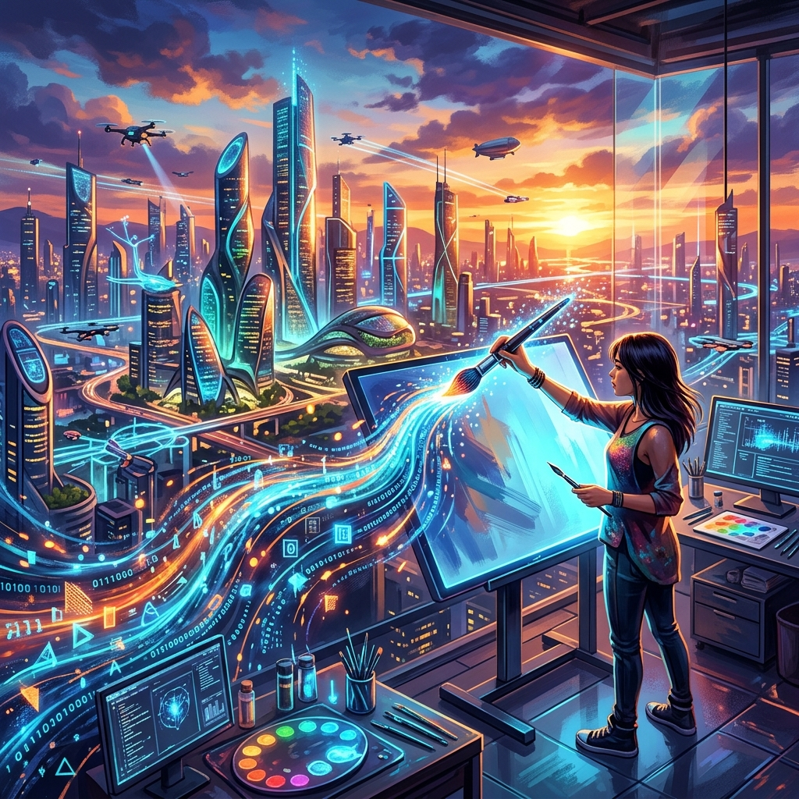

Avril 2024
OpenAI dévoile Sora
Sora est capable de générer des vidéos hyper-réalistes d'une minute à partir d'un simple prompt texte, ouvrant une nouvelle ère pour le cinéma et le marketing.
Lire la suite →L'IA Générative : La nouvelle frontière de l'innovation numérique
L'IA Générative ne se contente plus d'analyser des données, elle en crée de nouvelles : textes, images, code, sons et même vidéos. En tant qu'étudiant en développement (SLAM), je suis de près cette évolution qui transforme radicalement nos méthodes de travail et les capacités des logiciels que nous concevons.
Assistance au développement (Copilot, Cursor)
Modèles capables de comprendre texte et image
Création de contenu dynamique par IA
L'IA générative s'immisce dans toutes les industries
L'IA génère du code, identifie des bugs et aide à la documentation. Des outils comme GitHub Copilot augmentent la productivité des développeurs de plus de 50% sur les tâches répétitives.
Accélération de la recherche de nouveaux médicaments et analyse de données médicales complexes. L'IA aide à prédire le repliement des protéines (AlphaFold).

Publicité, cinéma et jeux vidéo utilisent l'IA pour le concept art, le texturage et la génération de décors, réduisant les délais de production de manière spectaculaire.
Sora est capable de générer des vidéos hyper-réalistes d'une minute à partir d'un simple prompt texte, ouvrant une nouvelle ère pour le cinéma et le marketing.
Lire la suite →Mistral AI continue de rivaliser avec les géants américains avec la sortie de modèles "Open Weights" extrêmement performants comme Mistral Large.
Lire la suite →Google annonce un modèle capable de traiter jusqu'à 1 million de tokens, permettant d'analyser des livres entiers ou des heures de vidéo d'un coup.
Lire la suite →Illustration de l'IA comme assistant de création visuelle et sonore.
Dernières dépêches du monde de l'IA (Mai 2026)
Apple annonce l'intégration native de LLMs multimodaux dans iOS 19.5.
Mistral AI dépasse les attentes avec son nouveau modèle "Le Chat" pour développeurs.
Lancement du Blackwell B200 de NVIDIA pour les centres de données souverains.
Fusion annoncée entre Cohere et l'allemand Aleph Alpha pour une IA européenne.
Stripe déploie des agents IA pour la gestion automatisée des litiges financiers.